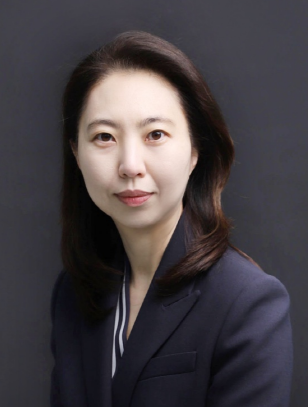

Immigrant & multicultural families
Acculturation, bilingual development, identity, parenting, and educational outcomes.
Exploring how family relationships, social environments, and educational opportunities shape the well-being of children, adolescents, and young adults.

Ui Jeong Moon, Ph.D., is a professor in the Department of Child Welfare at Hannam University in South Korea. Her publications examine child and adolescent development, immigrant and multicultural families, education, family relationships, and psychosocial well-being.
Ph.D. · University of Maryland, College Park
Master's · The University of Texas at Austin
Bachelor's · Sookmyung Women's University
전문상담사 1급 수련감독자 (한국상담학회)
가족상담사 슈퍼바이저 (한국가족관계학회)
Themes synthesized from the listed publications, not a formal statement of current projects.
Acculturation, bilingual development, identity, parenting, and educational outcomes.
Self-esteem, mental well-being, peer relationships, and developmental experiences.
Academic achievement, educational expectations, college planning, and inequality.
Family communication, social isolation, social support, and quality of life.
31 publications, 2009–2026. Titles remain in their published language.
No publications match your search.
For academic inquiries, research discussions, and potential collaborations.